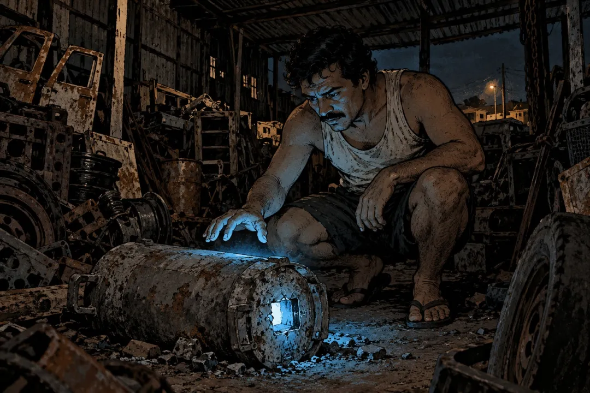

"고철상이 주운 '예쁜 가루'의 정체, 11만 명이 검사받은 고이아니아 방사능 사고"
고철상은 그게 예뻐서 집 안에 들여놓음
1987년 9월, 브라질 중부 도시 고이아니아.
고철상 주인 데바이르 페헤이라가 고물 더미에서 이상한 걸 발견함. 금속 덩어리 속에 든 작은 캡슐. 구멍 난 틈에서 파란빛이 새어 나오고 있었음.
불도 안 켰는데 혼자 빛나는 가루였음.
데바이르는 그걸 곧바로 집 안으로 가져감. 귀한 물건이거나 신비한 뭔가라고 생각한 것.
그리고 사흘 동안 가족과 친구들을 불러서 보여주고, 조금씩 나눠 줬음.
그 가루는 세슘-137이었음. 암 치료 기계에 들어가는 방사성 물질임.

좋아요 209
댓글 15
리포스트 8
공유 0